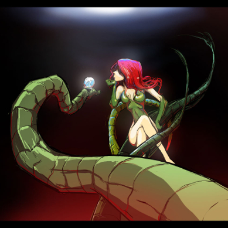

As an enthusiastic and professional graphics & layout designer who has worked for several companies since their inception, I enjoy being part of, as well as leading, a successful and productive team. I am quick to grasp new ideas and concepts, and to develop innovative and creative solutions to problems. I am able to work well on my own initiative and can demonstrate a high level of motivation required to meet the tightest of deadlines. Even under significant pressure, I possess a strong ability to perform effectively.
I am always looking to build on my extensive range of technical skills within a suitably challenging role. I am keen to achieve further professional development, whether it is in my own field or something else. As is evident from the particulars of my academic and professional qualifications, as well as my skills, interests and activities, I am a versatile person.
View my complete résumé
Find me on the internet:
Check out my write-ups
My write-ups

Read about me
March 26, 2012
Freestyle artist Sara likes communicating through art
Since her childhood, Sara Ali Hashmi knew how to tackle a pencil in sketching. Additionally, her power of observation is also good, which gives her an understanding to communicate with the outer world through this skill.
When she was asked how she became an artist, she said that like Pablo Picasso, she also believes that everyone is born an artist.
Explaining why she decided to become an artist, she said, "Scientifically, it has been proven that a picture has more impact on people, so I choose to represent my observations through this medium."
Mainly, she added, she likes this way of communicating with people or showing people whatever she observes.
Sara is a fine arts student with a Bachelor's degree in visual studies from the University of Karachi. Calling herself a freestyle artist, she is always practising drawing and painting.
She said that her ideas and inspirations come from reading books, observing people and their surroundings, and discussions.
Whatever she absorbs, she likes to show it to others and always feels a sense of relief by telling it to them.
She likes to write in her spare time. She prefers reading books by Ahmad Nadeem Qasmi, Munshi Premchand, Saadat Hasan Manto, Arundhati Roy, Bapsi Sidhwa, JD Salinger and Paulo Coelho. "I love music because it's a source of relaxation for me," she said.
Sara enjoys painting subjects of nature, especially landscapes and faces with wrinkles. All her artworks are special to her, as each has a different concept and idea behind it.
To novice artists, she advises recognising their abilities, and terms hard work as the key to success.
Artist Rabia Dawood says she fuses a piece of her soul into every artwork
The artist Rabia Dawood has been drawing and painting since childhood. She used to participate in school projects and interschool art competitions.
In art school, she studied anatomy and the skeletal system, and learned to draw from memory the origin, insertion and action of every surfacing muscle in the human body.
For her, working directly from life was the basis for all the classes in painting, drawing and sculpture. It gave her a strong foundation that allowed her to fully express her ideas later on.
"I have been visiting art galleries, meeting artists, and discussing their works and techniques, which helps me to improve and develop my own skills," Rabia told me in an interview.
Once out of college, she took a short course in painting. Thereafter, she continued developing her artistic skills with passion.
She said she was admired and praised for her work. "Art has always been a part of my soul. I believe it's a gift from God," she added.
When asked why she decided to become an artist, she said, "I didn't really decide to be an artist. There were probably other things that I could do and be happy, but I really think that making art is the most interesting thing, because to some extent it incorporates everything else that I'm interested in."
She started studying fine arts at the North City School of Art. In the final year, she transferred to the Karachi School of Art and was awarded the VM Art Education Scholarship in 2007 to complete her thesis.
Talking about her working style, she said her paintings consist of oil or acrylic paints on canvas with dark dripping textures.
She said the subject is mainly human form in contours and lines. "The technique in sculpting my human form is that I start with clay moulding, dye in Plaster of Paris and pouring gel coat, resin and casting my sculptures in fibreglass. I have also started working in watercolours miniature detailed portraits," she said.
Rabia said art is more than just lines and colours. "It's the visual emotion which comes from within the artist. This attachment brings a whole new meaning to the piece. It gives the picture character, gives the story animation and brings the dimension to life," she added.
Growing up, she tried to develop her art from simple sketches to complex shading. Her work tends to focus on human emotions and individual growth as consequences faced through different acts in life.
She is very sensitive about her art, as she puts a part of her in every piece of artwork she creates. "It's like a little piece of my soul is fused into every project. My mission is to create works that provoke thought and emotion," she explained.
When she started learning art, the works of Vincent van Gogh and Leonardo da Vinci, and the sculptures of Auguste Rodin really inspired her.
Talking about her hobbies and other interests, she said she has always loved drawing and doodling, and "creating fun things when I was younger."
She was fond of playing cricket, reading poetry, studying about astrological signs and playing computer games.
She likes soft, melodious songs, especially ghazals. She often reads books by Ashfaq Ahmed, Mumtaz Mufti, Qudratullah Shahab, Bano Qudsia and Mustansar Hussain Tarar. She has also been doing portraits from live sittings.
When asked where her ideas and inspirations come from, Rabia said she finds her subjects within herself and from her surroundings.
Books, news and the internet help define her thought process. As a shy person, she is not very communicative. "Art is how I communicate and express myself. It's like self-medication for me," she said.
Rabia said that of all her artworks, her personal favourite is one of her thesis paintings titled 'Mending of the Souls'. "It gives me a feeling of spiritual connection between the human soul and God," she added.
Sumair Rizvi is the lighting/VFX director of the popular Commander Safeguard series. "I'm crazy about lighting, compositing and VFX," Rizvi said in an interview. He's currently the creative production head at Cult Productions. He previously worked for Post Amazers.
Rizvi grew up watching his dad "who is very good at sketching and using software. I worked with software, watched cartoons, read comics, etc, and tried to draw. Later on, I was guided by my uncle Omer Qureshi who is a VFX director." So, he started his career as a trainee at a production house.
He started working at the age of 16, and "I think if you are an exceptionally good artist as well as young, it's a benefit, and people can always recognise quality and talent." He discovered his talent during his teens. "Keeping myself focused on what I'm creating helps me continue doing my work."
He loves to work with 3D characters and in sci-fi environments. Talking about his work process, he said, "The most important aspects of the stages are so important because they are the pillars: good production design, modelling, animation, lighting and compositing are the keys to getting good results."
Raphael Lacoste is his favourite artist. "I like the way he thinks. I mean his concepts. The things I like about his work are the composition, colours and feel. I'm a big fan." He said his keys to success are hard work, dedication, passion and waiting for the right time.
Talking about the job market for art professionals, he said, "An ad agency is a good platform for an artist to use his creative ideas because ad agencies are associated with the local market and they have all types of work that require creative people." He said freelancing is not a good long-term option.
He believes people with artistic talent should go to art school for their betterment because "you will receive proper knowledge and information regarding what you're doing." He said Pakistani institutions could impart proper training to students. "They guide the students in the right direction."
To aspiring artists, Rizvi said, "Always look forward to doing your work and do it with honesty and interest. Inspiration is very important. Set your target, the goals for your life to achieve. And improve yourself as much as you can."
Inverse Studios co-founder Syed Ali Asad Jafri says the only perfect artist he knows of is God
Syed Ali Asad Jafri has been a graphic designer and 3D animator for around 11 years now. He has worked with major studios across Pakistan on projects pertaining to advertising, broadcast and film.
"It's been a long journey. I've spent countless nights working towards reaching the finish line," Jafri said in an interview. He said he has been involved in both art and the technical side of animation.
"I've done storyboards, character designs, character rigs, animation and visual effects. I've also worked as a designer, animator, technical director, teacher, manager and team lead," he added.
Jafri said he is "one of the few people in Pakistan that can merge art with technical knowledge." He co-founded the animation company Inverse Studios and also teaches at the Iqra University.
He said he began considering a career in art and advertising around the age of 12. "A friend of mine introduced me to Photoshop 2.0, as I had a great passion for drawing," he said. His parents wanted him to choose Arabic as an elective subject in school, but he chose drawing.
Talking about how he developed an interest in art and advertising, he said he loved watching Disney cartoons and reading comic books. He then wanted to create his own characters. "It was a long process of self-education," he said.
Jafri terms "patience, perseverance and keeping an eye on the larger picture" as his keys to success. He said he did not have a role model during his early days. "I just wanted to create what I saw in films and TV programmes," he added.
He said when he started his career, his seniors gave him the cold shoulder and avoided teaching him what he needed to know. "Finally, I found the best teacher anyone could ever have: books. I have a huge collection of them," he added.
The things he enjoys the most about his job is "the friendly people I meet along the way and all the good memories, the laughter and working as a unit to do something great, and the excitement and pure joy one feels after achieving the seemingly impossible."
Jafri said one of the most common myths regarding creative directors is that they are Hitlers. "Though, it all depends on the personality and what people have experienced in their past," he added.
He said some supervisors give a hard time to their subordinates because they themselves were treated the same way or maybe they just love being a pharaoh. "My view is that if you love people, people will love you," he added.
He said if someone is good at art, it is because they have good observation skills plus a visual library in their head. "Art schools polish the artist that is already inside you, and I recommend them to anyone who has a passion for it," he added.
Jafri said there was not much when he had started out, but things have drastically changed now. "I wish I had seniors like myself to teach and guide me. I wish we had then the facilities that we have today," he added.
He said for him, it was like "fighting a war with little or no ammunition", and now people have a better chance of survival and a better future if they are disciplined enough to work for achieving their dreams.
When asked if Pakistani institutions are playing any role in providing proper training or making perfect artists, he said, "I think some of them are playing a positive role. There is no such thing as a perfect artist, though. The only perfect artist I know of is God. Other artists evolve and continuously strive for perfection."
He said if someone already has the talent for art, they should go to art school to polish their skills and to have their work critiqued so that it could be improved and they could network with people in the industry.
Talking about the future, he said as an artist, his focus is to grow, learn and be the best he could be within limited resources. "I try not to think much about the future because the only certain thing in life is death," he added.
To aspiring artists, Jafri said: "No matter how bad things become, pick yourself up and move forward. Adapt, evolve and never become a dinosaur!"
Tom and Jerry, Mickey Mouse, Pink Panther, Teenage Mutant Ninja Turtles and Camp Candy fascinated and inspired Karachi-based animator Marcus Kim Cade growing up.
When he was between 5 and 7 years old, Cade watched cartoons like other children, but "I always had a different point of view towards them," he said during an interview.
He said he wanted to know about the people who made those programmes and how they did it. "I wanted to find out why kids in my age group were enthralled by them," he added.
He said he started looking for people with the same interests as his. "I had to struggle a lot, but I didn't find anyone who was like me. I felt alone and depressed. I used to pick up my pencil box and drawing book and spend hours on the rooftop imagining and drawing."
Cade said he was always drawing. "I used to draw in my school books as well, and when I was between 12 and 14 years, I made a flip book. I observed people, how they move and act, and then created my flip books. I had no idea that what I was doing was animation," he added.
But, he said, he received incredible comments on it from his teachers, friends and everyone who was a part of his small world. "And then I started my career," he added.
He started working for Sharp Image where he learned the nuts and bolts of the animation industry. He said, "I learned a lot there and enjoyed working on concept art."
Differentiating between concept art and animation, he said, "Concept art is creative art about the things you can extensively think about and just show people the picture (by drawing it). Animation is creating a being and then making it move."
A dedicated and loving person who is proud to have a supportive family, Cade's other interests include video games, kickboxing, and playing the piano and the flute.
He said he was unable to pursue a higher education because he comes from a middle-class background and was supporting his family through different jobs.
"I couldn't complete my education, but I never felt sad over that because I have already acquired master's level skills in my profession through my profession," he added.
He said someday he would be teaching all that he knows to those talented individuals who are unable to acquire formal training because of financial difficulties.
"I shall be happy to teach them because my God has blessed me with such a talent that makes me different from others," he added.
When asked for his advice to aspiring artists, he said, "They should work hard and use the internet to improve their skills by watching tutorials and perusing e-books, so they could have better chances of making progress in the future."
'Don't get bogged down by what camera you're using'
Omer Sidat, a management professional, talks about his passion for photography
Omer Sidat is a management professional and a textile technologist, pursuing a career in textiles. His only other passion is photography, and if it were not for textiles, he would have been pursuing a full-time career in photography.
Sidat said, "I started photography with a Minolta 110 camera, received as a gift from my mother on my 12th birthday." That was 33 years ago, and he has come a long way since. Up until a decade ago, he was shooting with film. When he moved to digital, he initially opted for a basic point-and-shoot, which was "a quicker way of seeing composition results." Around 2001 or so, he was still shooting film, but most of his imaging had switched to digital. Another year or so later, he completely moved from film to digital. "Over the years, photography for me has turned into a very serious passion and a way of expressing my point of view."
His ideal headshot would be of "a young child, with an innocent face and eyes full of inquisitiveness." This would only be rivalled by a head shot of "an extremely old person, with blurry eyes and wrinkles on his/her face, telling a story of a long forgotten lifetime."
Sidat has been a dreamer since childhood. He has always been attracted to things that could allow him to express his thoughts through creativity. As a teenager, besides photography, he would spend a lot of time making and breaking things. He used to carve things out of pieces of wood, primarily, different types of daggers and knives, having developed a liking for martial arts in that phase of life. During his college days, he used to write poetry, initially in English, but he later turned to full-time Urdu poetry. He was inspired by Sadequain and used to do calligraphy of verses from the holy Quran. "All in all, I was always attracted to different forms of creative expression."
His academic background is not related to any form of creative arts. He did his Bachelors in Commerce, followed by a Masters in Business Administration with focus on Strategic Management. During his academic years, the only area where he could express his creativity was through writing, or through projects pertaining to marketing or business presentations. "Photography for me has been a self-taught art, and I've continued to do photography without referring to any educational literature until recently. The internet has opened a tremendous opportunity to expand my learning and refine my techniques."
Primarily, Sidat finds himself attracted more to the "classic, old-school approach." However, given the way modern-day photography is evolving, he realised that his personal photography style keeps changing drastically, "from contemporary to retro and back, even within one specific series of work." In all fairness, his style is "highly dependent on the subject I am shooting, the situation or location I might be at, the storyline or concept behind a particular project, as well as on the end use of the work that I need to do."
Sometimes, he finds his subjects himself, whereas on many other occasions, his subjects find him, "popping out of nowhere." His insect macro shots are often unplanned, as "these critters appear and disappear at their own free will, with very little a photographer can control." On the other hand, any landscapes that he does are "50 percent pre-planned and 50 percent spur-of-the-moment shots." His portraits are mostly pre-planned, "at least from my point of view and preparation, even if they fall into the genres of street photography or candid. Studio portraits are much more planned, with additional emphasis on artificial lighting and backdrops, etc."
When asked if he has ever offended anyone, Sidat said, "Offended a macro subject? I dare not! I certainly do not want to be hospitalised due to poisonous insect venom... But jokes apart, I honestly do not recall any instance where my photography may have offended a human subject. Perhaps the reason behind it is that I almost always seek permission from the subject before photographing. On a few occasions where I have taken candid shots, the subject is usually unaware, so chances of getting offended are eliminated."
On most planned shoots or photo trips, he always carries multiple cameras. However, if it is a casual outing where photography may not be his major objective and would be a side venture, "then usually one camera would suffice."
He takes inspiration from everyone, be it a senior, a colleague or a younger photo enthusiast. "However, there are a few people who have definitely influenced the way I photograph or the way I present my creations. One such person is Lee Jeffries, one of the masters of modern-day dynamic portrait photography. Other artists/photographers who have influenced my work include Linden Gledhill, Nikola Rahme and Patrick Smith."
Sidat usually works on multiple projects at a time. Last year, he had done a photo-story on child labour. This year, he is planning to expand on that story, with more emphasis on seeking to learn further about the background of each child that he photographs. "I am also expanding and working on a project that I had done earlier, and where I would be creating photographic images with painterly effects within a single exposure, without using any digital manipulation or Photoshop treatment. Aside from that, my usual macro photo adventures continue and are typically dependent on when a critter presents itself to get photographed. However, I am specifically planning on doing an extreme macro high magnification project, which would exceed and go beyond 5:1 life-size all the way to 20:1 life-size."
Talking about his motivation, he said that the closer he gets to his subjects, the more amazed he gets and understands God's detailed creations. His interest persists, as he wants to see more closely, explore and understand this world, which is "almost invisible to the human eye."
When asked if it's a good sign that every young person with a camera these days wants to become a photographer, Sidat said, "I think that it's a good thing. This way, youngsters find a good, creative outlet. Every one of these amateurs would definitely not grow up to adopt photography as a profession or as a serious hobby, but those who would be passionate and determined about this field of creative expression would automatically excel."
For aspiring photographers, he said, "First and foremost, a good photographer would be able to utilise an average camera to make great compositions. On the contrary, a bad photographer, even with the highest rated camera equipment, would only be able to take average or below average photographs. Don't get bogged down by what camera you're using. Learn to use what you have to convert your vision to photo composition. Secondly, I firmly believe in the three P's of photography: Passion, Patience and Perseverance. With appropriate use of these three P's, one does not have a reason to not succeed."
Concept artist Adnan Ali loves taking on challenging projects
Adnan Ali has always been good at sketching. He used to draw all sorts of brawny characters. And as soon as he got his "tools" (software), he stared working on the computer, manipulating his photographs and then creating characters of his own.
Ali, who did his certificate course in communication design from the Karachi School of Art, has always been an avid comic reader, especially manga. He loves watching animations and science fiction films. He believes those are the reasons he is attracted to creating worlds of his own.
While a lot of local and foreign work inspires him, his biggest inspiration is his mentor, Saad Irfan, who has influenced his work a great deal. Besides Irfan, Shahan Zaidi, Anas Riasat and Wasiq Haris also inspire him a lot.
Ali works as a concept artist at the Lucid Studio with Irfan and Riasat. "We normally get the brief from our clients, and then come up with the concept and conceptual illustrations for them, so that the process of animation could commence," Ali said while talking about his work.
For him, personal work is more satisfying, but "working for a client has its own benefits. A client sets some limitations, which we have to follow, and producing a quality output within those limitations is an engaging challenge."
While Ali admits that traditional art is not a piece of cake, his fascination with digital art stems from the limitless possibilities that it offers. "You can represent one thing in so many different ways. I just love it!" he said enthusiastically.
Making random strokes and creating something new with it is the most enjoyable aspect of being an artist to Ali. Moreover, manga, his passion for animation and his mentor Irfan keep the fire of constantly creating new art alive in him.
Talking about the future, he said he sees himself being credited as the lead animator in an internationally acclaimed animated film.
His advice to beginners: "No matter how talented you are, you should definitely enrol in an art school to polish your skills and learn new, more creative ways to express yourself."
He said that working hard, trying to find your stronger abilities and being yourself would help loads. "Trust me! Your best art surfaces when you're able to explore within yourself."
Digital sculptor Khurram Hamid Alavi says talent needs to be developed into skill through formal education to make a living and excel in the industry
Khurram Hamid Alavi is a Karachi-based digital sculptor/art director for animation, and toys and collectibles. He works remotely from his den for various foreign clients, including Sega, Warner Bros and Marvel Entertainment. He graduated in the discipline of Graphic Design from the Indus Valley School of Art and Architecture in 2005. Since then, he has successfully transitioned into the industry of computer graphics and entertainment. He is presently working with various companies that produce toys and collectibles.
Alavi began considering a career in art in his teens. His teachers and the community that he grew up in were extremely supportive of his ability to sketch, ink and colour. "I knew by the time I had finished college that art was the only direction for me. At that stage, I was very much into comic book illustration and traditional animation," he said.
Alavi said, "We used to have an annual fun fair and food festival in the colony that I lived in. They used to hold an auction for charity at the end of the festival. I started making posters of various superheroes, picking up artwork from a particular comic book and then drawing, inking and colouring a replica of that image onto a 20 by 30 cartridge sheet. The response was very positive, so I seriously began to consider taking it to the next level."
Regarding his work, he said, "A teacher of mine once said to me that 'perfection is a by-product of observation.' It's stuck with me ever since. If you think about it, that's all it really takes. We learn and take inspiration from the real world around us. That is my approach as far as my work is concerned."
Some artists prefer landscapes, while some prefer other subjects or mediums, but Alavi loves characters. "Characters are the most important element in a story. They communicate ideas to the viewer in a way that no other element can in a story. I love this aspect about characters, and that is why I've focused my skills in this direction," he said.
Talking about the process of his work, he said, "I'm provided with concept art for the project first, along with several art references. Then the ideas for the pose and style of execution are discussed. Once I'm clear on the instructions, I start building the mesh up in Pixologic ZBrush. The sharing of references is the most important part of the process. In the case of characters, anatomy and structure are the most crucial elements of the process. Your character will never work if the anatomy and structure isn't working. And this is an area where many Pakistani artists fall short."
Alavi has learnt a great deal from traditional sculptor Randy Bowen. "Bowen has his own, unique sculpture style that I've never seen before. Other traditional greats I admire include Tim Bruckner, Tim Miller, Mark Newman and Trevor Grove. Moreover, I think Chris Moffit is a great digital artist. His work is very unique and he is probably the only artist right now that does great stylised toon work using ZBrush and 3ds max," he said.
His keys to success are determination, perseverance and a lot of hard work. He forgets about the world and focuses on improving himself as an artist. He enjoys working from home as he gets to spend time with his family. Besides, he makes superheroes and some of the most beloved characters in the world, so that is a treat in itself for him.
When asked what a digital sculptor does, he said, "It's a fairly new term in the CG industry since we usually use the term 'modeller' when it comes to animation. However, with the advent of sculpting software like ZBrush, Autodesk Mudbox, Pixologic Sculptris, etc, the process has become much more flexible. Modelling for production or games is a time-consuming process, and we find that a lot of time is lost when the creative aspect of the project conflicts with the technical aspect. So, for animation, a digital sculptor can help convert the concept art into a digital sculpture that can then be converted by a modeller for animation purposes. For toys and collectibles, a digital sculptor sculpts the project digitally in sculpting software and then provides it to a printing place for rapid prototyping. In both cases, digital sculptors are beginning to become key players. I foresee them playing a major role in the years to come."
Alavi doesn't believe having talent is enough. "You need to develop talent into skill that you can use to make a living and excel in the field. Formal education is the only way to go about it. There are always some exceptions, but nothing beats learning from the ground up, even if you're Leonardo da Vinci reborn. Once you go through the fundamentals in the foundation year, you'll realise that art isn't all about emotions and expression. It has a lot more to do with disciplining your mind and your senses, and expressing your unique points of view creatively, either on paper, digitally or in the form of a sculpture," he said.
When asked if Pakistani institutions provide proper training in art or animation, he emphatically said no, as far as animation is concerned. "I think one or two universities provide very good art education, whereas other training centres and smaller institutes provide good training only in software. Local institutions are not playing a big role in producing good artists. If they were, Pakistani artists would've received more recognition globally. Local artists who are successful have reached there with hard work, determination and sacrifices," he said.
Regarding his future, he said, "I see myself directing animated content. It's something I've done briefly during my career, and would love to do more of in the future. I love to teach and transfer my knowledge to the coming generation. Everyone should leave their mark in history. I'd like to leave mine this way."
To aspiring artists, he says, "Fix your attitude. Stop whining. Take criticism positively. Stay sincere to your work. And, most of all, do not give up. Your talent is just a starting point. It's up to you to develop it into a phenomenon. To do that, you need to work as hard as you can. Always remember that failure is a sign of success, provided you learn from your mistakes and do not repeat them. Focus on your goals, work hard to achieve them and don't let the world distract you in the process. And always practice, practice and practice!"
'Proper learning and working environment is key to success'
Lucid Concepts co-founder says concept artists shouldn't restrict themselves to their core skills
Anas Riasat of Lucid Concepts was born and has lived for 12 years in Saudi Arabia. He grew up watching cartoon series and playing computer games that were popular in his childhood.
Being a fan of cartoons and animation, he spent countless hours drawing characters and comics from an early age. Another source of inspiration was his elder brother who used to create detailed and accurate drawings of aircraft and other vehicles.
After Riasat moved to Pakistan, he continued researching the animation and art fields, but never got an opportunity to attend a proper art or animation school.
He almost pursued a degree in business administration, but before that could happen, he got a job as a graphic designer at a software house. He was responsible for designing software interfaces.
Later on, the software house expanded its business into a record label company where Riasat started designing album covers and posters. It was his first-ever experience of working in an environment where seeing celebrities was commonplace.
All of that looked exciting in the beginning, but soon he realised that he had been working not just for the wrong company, but for the wrong industry. The second time a similar feeling bothered him was when he started working for a small animation company.
Finally, though, he found a place where he is at peace and is worth living in. "Yes, that's true. Nowadays, I'm living in my studio 'Lucid Studios'," said Riasat.
At the studio, he co-founded a concept art wing 'Lucid Concepts' with his friend Nadir Hussain Shah. "Shah owns Lucid Studios and is one of the most visionary film/commercial directors in Pakistan," Riasat added.
He always pursued the path that would lead him to the animation field. When he came across a few documentaries and articles about 2D animation, mostly published by Disney and Hanna-Barbera, he became passionate about animation and dreamt of working for the Walt Disney Animation Studios after completing his studies. "Then there was anime in the early 90s and, of course, PC games of that era that became my source of inspiration," he said.
He was in the third grade when he discovered his talent and started making stick figures, which evolved into cartoonish characters. After a couple of years, he started selling his artwork and characters to other kids in the class.
"I remember translating pixellated game characters into drawings of my own. It gave my imagination a tremendous boost since I had to force my brain to imagine the low-detailed pixels in a more defined form," he added.
According to Riasat, choosing the right type of environment to work and learn in is one of the principal keys to success. Craig Mullins, the great master of concept art; Khurram Alavi, the best digital sculptor in Pakistan; and Nadir Hussain Shah, a film director who has the aesthetics and vision that the local industry really needs right now are Riasat's major sources of inspiration.
When asked what he enjoys the most about his job, he said, "Making my dreams come true. It's like revisiting your childhood imagination. And I consider myself lucky that I'm making a good living out of it in the present economy."
Talking about the future, he said he sees his entire team setting a higher standard in the local industry. "We also have a plan to execute some videogame ideas, initially on a small scale though," he said.
Moreover, as an art director, he sees his name on a lot of comic books and animated films; whereas he also has plans of starting an art academy, but it depends on the way the industry shapes itself in the future.
For aspiring artists, he said if someone discovers they have the talent to draw and paint and dream of seeing their drawings and characters come to life, they should understand what the term 'concept art' is all about.
"Concept art is similar in nature to concept writing," he said. "It's basically a way of describing or expressing your story in a visual form. To be a good concept artist, one needs to be equipped with knowledge and experiences like a concept writer," he added.
Riasat's advice to people interested in concept art is that they should not restrict themselves to their core skills of drawing, painting or sculpting. In fact, they should explore new tools and software since their artistic skills could be applicable in any medium.
"Lastly, don't be dependent on institutions or production houses. The internet is the best resource where you can learn not only digital art but also the theories behind traditional arts and craft," he added.
'Your work, dedication and motivation is your identity'
Artist Babrus Khan says you can't follow a set of rules and make a name in the arts field
Artist Babrus Khan started his professional life at the age of 17. He has been into comics, video games and, most importantly, drawing since childhood. He always wanted to become a comics artist or a game designer, or work on cartoons.
"I started working after my Intermediate exams due to family problems," Khan said. "My cousin, whom I respect the most, helped me get an internship in a small company when I was 17. I had no qualification and no experience, and I didn't know where I'd end up in the future. My thrilling professional life had begun and I wanted to do my best," he added.
He became an artist purely out of his love for comics and video games, and he was so into them that he spent most of his time reading about game engines or software on the internet, which affected his studies and resulted in bad grades.
His working style is heavily influenced by comics and mangas (Japanese comics), but "my work falls somewhere between them," he said. "One thing I love about comics and manga is that they're very expressive. What's really interesting about them is that you get to step into a whole new world through them. For example, there are comic book characters based on the seven deadly sins and each character is represented by a sin," he added.
Khan does not like to draw that which already exists. "I draw what I visualise," he said. "I want to show everyone what's inside my head. That's why I appreciate comic books and comics art because all these artists come up with amazing worlds and ideas. I believe this style of art has no boundaries," he added.
He is familiar with both 3D and 2D software, but he spends almost all of his time on 2D software. "Adobe Photoshop is my best friend," he said. "Other than that, it depends on the requirement. I might use Adobe Illustrator for vector graphics, but that's very rare," he added. He started drawing with pencils and pens so, naturally, he still prefers them, but "my graphics tablet is a lifesaver. It's like a part of my body now," Khan said.
He believes that digital art, which requires mostly technical knowledge, has made life easier for even those with average drawing skills. However, he said, traditional artists benefit from these software the most. "Paintings that used to take days or months to complete can be completed within hours with the help of software," he added.
According to him, the value of both traditional and digital art is essentially the same. "It's just that digital art can save a lot of time," he said. "However, most digital artists who are also traditional artists work on the canvas first and then scan and digitally master their work," he added.
Khan loves production designing, concept art and almost everything about art direction. The process of designing everything regarding a project is what attracts him the most. For example, he said, a film's art director visualises everything from the wardrobe and makeup of the characters to the creatures and the landscapes. "Following that, artists fortify those concepts for the big screen. As far as I'm concerned, however, I like to come up with new ideas and make them real," he added.
Out of all his artwork, a metal dragon called 'Abraxas' from his comics titled 'Vendetta' is his most favourite character. When he was drawing Abraxas, he asked himself why dragons are always drawn like giant lizards from ancient times breathing fire, and then made his dragon to be "a cybernetic creature". Abraxas is a hulking metal beast with a human brain; it looks more menacing than your average dragon and lives in the future.
About his future, Khan said he wants to create his own comics. "Two of them are already on my Facebook page," he said. "I wish to create my comics on par with those by professional comics artists, and see my comic books in print. Other than that, I want to work on cartoons and animated films of my own," he added.
To newcomers in this field, he said everyone is identified by their work, which reveals their dedication and motivation. "You can't follow a set of rules and make a name in this field without having anything to show for it," he added.
He said most people try to join this field because of its charm. "Unless you know why you're joining this line of work, unless you have a game plan, don't waste your time. Yes, it's fun what we do, but it's for those who are ready to dedicate themselves to their work -- just like other fields," Khan added.
'Digital art receives more attention than traditional art in Pakistan'
Syed Salman Nasir shares his journey in the art world with Pakistan Today
Syed Salman Nasir started drawing at the age of three-and-a-half and had a passion for cars and horses. "At that time, my best friends were my dinky cars, my horse models, and my pencils and papers. I would draw whenever and wherever until it turned into a passion," Nasir said while talking to Pakistan Today.
He said, "Being a mechanical engineer, my father used to draw cars for me, and I was always fascinated by the intricate mechanics and the latest models. An uncle of mine who was and still is a horse fanatic used to send me picture books with horses in them, and I used to draw those horses."
Watching animated series on the television expanded his world of imagination threefold. He was so fascinated by the animated heroes that he quickly forgot about cars and horses.
"Soon, comic books entered my life and I would read about superheroes and watch their programmes on the television, and then draw their latest adventures," he said.
After painstakingly pursuing science for 12 years, his elders agreed to send him to the Indus Valley School of Arts and Architecture. "Four years later, I graduated with distinction and received my Bachelor of Design degree," he told this scribe.
During his time at Indus, however, Nasir was known more for his illustration skills than for his design work. "Hence, I am known as an illustrator and a storyboard artist in the industry," he said.
After getting into Indus, he began experimenting with computer software. During this time, he also got a pen tablet. "Using these new tools helped me broaden my horizons and expand my mind frame so much that I felt that nothing was impossible. I believed that if I could think of something, then these tools would provide me with the resources to create it. And there has been no turning back since," he said.
Talking about inspiration, he said that comic books and anything to do with superheroes are his prime sources of ideas and inspiration. "I am also greatly inspired when I'm in a forest or in the mountains. The quiet, serene atmosphere has a miraculous effect on the brain and helps me relax. Listening to good music helps as well, especially when I have a lot of work to do."
When asked why digital art is valued more than manual art, he said that traditional art does not have any less value than digital art, but the latter receives more attention.
"Unfortunately, manual art does not get the kind of respect in Pakistan that it deserves. Hence, it has been limited to a selective group of people who know of it and appreciate it," he said.
He added that digital art receives more limelight because it is in the media, and on the billboards, computers, mobile phones, etc.
Talking about the future, he said that he hopes to set up a company to promote traditional and digital artists. "I want to bring all artists on one platform and provide them with the resources necessary for expressing themselves and promoting our country's culture and values," he added.
For novice artists, he said, "Never give up. If you're passionate about something, go for it. It's much better to do something that you would do well and with all your heart than doing something you don't have the slightest interest in. In the words of the character Andy Bogard, 'If you want to be the best, it's practice every day, pal.'"
Mazhar Sadiq talks to Pakistan Today about his love for digital painting
Twenty four-year-old Mazhar Sadiq has been working as an animator at a private television channel in Karachi since 2007.
Sadiq has always been passionate about drawing and sketching. "It's a hobby that I take very seriously," he said in an interview with Pakistan Today.
When he was in school, he used to draw sketches and portraits. "When I started my first job as a web designer, I was exposed to digital designing," he said.
He had mostly been engaging himself in traditional art, but using computer software gave him a good idea about how flexible digital art really is.
At his present job as an animator, he uses gadgets like digital tablets. "When I started drawing and painting using a digital pen, I fell in love with digital painting," he said.
He likes to study the old masters like Leonardo da Vinci and Sargent. However, he said, he also follows modern artists on various art forums on the Internet.
"I like to draw mostly portraits. I love to see a good rendering when I start to draw. Drawing is very soothing and relaxing for my mind, but it can sometimes be very challenging. However, if I can obtain a good result, it gives me a feeling of achievement," Sadiq told this scribe.
When asked why digital art receives more attention than manual art, he said, "Maybe because of Ctrl+Z. In traditional art, 'undo' is not an option. Moreover, digital art is also preferred over manual art because no one seems to have much time on their hands these days, and working digitally saves a lot of time. In my opinion, however, digital art cannot surpass traditional art."
He has always been inspired by detailed and nearer-to-life art pieces, which is why he also likes to put a lot of details in his work.
"I enjoy working on minute details in my work. I seldom work on rough ideas. Finishing an art piece with details is also kind of my signature," he said.
Talking about the future, he said that it is his dream to work at one of the most prominent American animation film studios, but being a chief executive officer of a successful post-production house is what he is really aiming for.
For novice artists, Sadiq said that if they have a passion for the arts, they need to be sincere and devoted to their work. "They should keep studying their field and practising seriously. This will give them great rewards," he said.
Digital artist Waheed Nasir talks to Pakistan Today about the five aspects of his creative world
Before entering the field of digital art, Waheed Nasir had trained and worked as a fine artist. "I was taught by Bashir Mirza, a renowned artist known to many as BM. Though it was an informal training, BM taught me in a very disciplined and traditional way," Nasir told Pakistan Today.
He has held art exhibitions of his traditional paintings locally and internationally as well as taught fine arts abroad. After returning to Pakistan, he entered the computer graphics field and joined a local post-production facility.
Recounting how he became an artist, Nasir said that he was pulled in because of his interest in art during childhood, some sense of perspective and composition, and understanding of tones and values from the very beginning.
He expressed gratitude to his family and friends, his mentor BM and senior art critics for encouragement and for the right training at the right time.
"My very first exhibition was quite successful. Many articles by distinguished art critics and writers followed. All that helped me make the decision to take art more seriously and to choose it as a career," he said.
Nasir is mainly a self-taught artist, but he learnt a lot from Bashir Mirza and considers him as his mentor. "As a good teacher, BM gave me confidence and opened doors for me," he said.
Talking about digital art, he said that he paints in a realistic manner and sometimes in a very casual, but bold, fashion with visible brushwork. "It all depends on the need of the project - from the highly realistic approach to speedy concept paintings," he said.
Though as a fine artist, his personal favourite style is impressionism, even for his digital paintings and concept art.
Besides being an artist, Nasir is a musician as well. When asked if music played a significant role in his life, he said, "It's all the same. Whether you paint, compose a piece of music or play an instrument, they have similar rules and elements - like tone, texture, harmony and depth," he said.
For Nasir, a good, touching music in the background helps create a moody, atmospheric painting. "It works every time for me," he said.
He said that his creative world is divided into five parts. "My current work where I am the creative head, and create and supervise all the creative work; my personal work that I make sure I engage in every day; I freelance as a concept artist and matte painter for local and international projects as well; I also try to paint on canvas whenever I can; and if you count music, then that's the fifth aspect of my creative world" he explained.
He plays and teaches guitar as well as composes music whenever he could. Moreover, he has shown his oil paintings and drawings at four solo shows and been part of over 12 group shows abroad.
Talking about inspiration and ideas, he said, "All around us are colours, perspective, space, atmosphere and mood. Then there are feelings and emotions, nature and abstraction, people and stories, and textures and details - every single thing, place and person can inspire me to paint."
Nasir said that sketching, drawing, painting, photography are all very important for 2D and 3D artists. "One must have a good, strong idea about all these things because having an art background is crucial for producing correct and aesthetically pleasing CG work," he said.
"One must at least have a thorough knowledge of the field that is directly related to the work one is doing in graphics. For example, a digital painter must know drawing and painting very well, a 3D texture artist must be well aware of actual paintings, an animator must know drawing - especially how to draw poses and expressions - and a matte painter has to be good at actual landscape paintings and know all the rules of art," he added.
Nasir is extremely talented in designing 2D pieces. When asked if he approached a 2D illustration in a different way from a 3D work, he said that there are things that must be thought about and planned while working in 2D; things that one takes for granted in 3D, like perspective. "In 2D, you have to paint everything - light, shadows, textures, perspective and depth," he explained.
He enjoys every bit of whatever he does. "It's all art, and it's all fun. If I really have to pick one area that I enjoy working in the most, then I would have to say it's concept art for me, mostly for mood," he said.
All of his artworks are his favourites. "That's exactly why I made them in the first place." He said. He works only when he feels completely involved in whatever he is creating, and feels in love with his creations.
Nasir wishes to continue his journey of creating art and to enjoy working with all his heart, no matter where he is or would be in the future. "As for the industry, I see immense hope because it's growing and the quality of work is improving. The pace is slow, but it is steady nonetheless," he said.
"We are at the initial stage and it will take time to see refinement in local work. However, I feel that we are on the right track and that we should stop compromising on quality. More dedication, professionalism and discipline are needed. We must have the right people and provide quality training to the deserving beginners who are genuinely interested in this field," he added.
Advising aspiring artists, Nasir said that only those with the right approach and deep interest for this field must embark upon it. "It's not for everyone. The only advice I can think of for the beginners is for them to be sincere with themselves and their work. If you aren't compelled from within to be in this field, don't jump in," he said.
"As is true for any other field, love is the key for making it in this industry. Doing something half-heartedly isn't going to work at all. When you're in, draw and sketch as much as you can. Don't sit idle. Read about art and observe things. One can learn a lot just by looking around," he added.
User experience designer Muhammad Omair talks to Pakistan Today
"Photography is my second life. I inherited the love of photographing from my father, and honed my skills as my passion for travel and exploration took me to new places," User Experience Designer Muhammad Omair told Pakistan Today.
Omair photographs for pleasure and relaxing his mind. He is a young, friendly, passionate photographer who has many achievements to his credit.
Describing his ideal headshot subject, he said that he prefers the elderly. "Looking at them as subjects, I find that shadow on their faces looks mesmerising; whereas observing them as humans, capturing the hardships of their lives imprinted on their faces and the expressions in their eyes is an extraordinary experience," he explained.
Omair has always loved photography and capturing the world the way he sees it. "I started photographing in 2004 with a point-and-shoot camera and learnt the basic techniques. I bought my first digital single-lens reflex (DSLR) camera in 2008 and studied photography further," he said.
Alongside his design work, he started freelance photography and worked on many projects for promoting Pakistan's beauty and tourism, as well as on documentary shoots. He also participated in a large number of national and international exhibitions.
"I am constantly inspired by good work and I keep trying out different genres of photography, but I always want to capture photographs that are self-explanatory and technically and aesthetically perfect," Omair said.
He is not only a photographer, but a graphic designer as well. "Both fields are very interesting. I started photography as a hobby, but it appeals more to me now because I do it for my own satisfaction," he said, adding that he also takes interest in videography by DSLRs.
Offering advice for aspiring photographers, Omair said that photography has become very easy these days thanks to digital equipment. "However, the trick is to capture an image using the right equipment with the right technique at the right time, which is the difference between a true photographer and all the rest," he said.
"Always come up with your own signature style and storyboard. Take inspiration from the work others have done before you and try to improve your own work, but do not copy," he added.
Hopes 3D industry will find its silver lining in Pakistani clouds
"I am never sitting idly. I'm either with a paper and a pencil, doodling; or using my camera to capture simple objects through the lens," 3D artist Furkan Wahab told Pakistan Today in an interview.
Drawing attracted Wahab since childhood. Nothing interested him as much as his papers and pencils. He always tried to find better pencils, lots of papers and a peaceful corner under a table, away from everyone's eyes.
No wonder he is a cartoonist today; an animator by profession who loves spending spare time photographing and experimenting with different things.
He started off as a freelancer for a renowned children's monthly and then worked for several other magazines. He started his professional career as a 2D animator and then moved on to 3D animation.
He displayed his expertise in a variety of 3D projects, including character modelling and character rigging. Stressing the importance of research, he recounted how his team members and he studied the way a chicken walks and acts as well as its feathers.
Wahab said that for 3D artists, it helps a lot if they are skilled in drawing and photography. In 2D illustrations, the artists have to paint each and every detail themselves, including direction of the light and depth of the object, but in 3D works, depth could be easily achieved by lighting up the object, he added.
"I enjoy creating cuddly cartoonish characters and funny animations. As clichéd as it may sound, I love all my creations and they are like my children, so I can't like one of them more than the others," he said.
Regarding the future of the 3D industry, he said that 3D animated movies of fine quality might be produced more in Pakistan or 3D work might remain a hobby for many while they do something else for a living.
Advising those seeking a career in the creative industry, he said, "Be focused, stay patient and keep your fingers crossed until the 3D industry finds its silver lining in the Pakistani clouds."
Concept artist Shahan Zaidi stresses upon aspiring artists to continue learning
Shahan Zaidi - a multitalented senior art director, concept artist, matte painter and teacher from Karachi - recently discussed his influences, styles, workflow and artistic medium with Pakistan Today.
Starting out at an early age and consistently refining his craft, Zaidi stands out as a true artist with the passion and creativity to highlight the details and splendour in his work.
He started his career as a cartoonist when he was only 15. Later, he started painting and also did a comic series for a magazine. He also worked as an image editor under the supervision of a renowned photographer, the late Asghar Bhatti.
He received training in theatre from Michael Shank, Sheema Kermani and Irfan Sadiq, acting in a few plays with Kermani and Sadiq at the Arts Council of Pakistan, the Pakistan American Cultural Centre and the Rafi Peer Festival.
He also wrote some short plays, and acknowledges theatre playing a major role in improving his character design skills, which he had put to good use at an animation film studio he had joined as a 3D animation intern.
However, after realising his interests leaned more towards art than animation, he joined another post-production house as a concept artist.
He has also worked as a senior concept artist and a senior art director, whereas he is currently a visiting faculty member for character design at a reputed university.
"Everything around me inspires my art. My house and family members, my workplace and colleagues, good and bad people, my students, nature, films, the Internet, writers, artists, photographers, musicians - everyone and everything," Zaidi said.
He said that every new project starts with some brainstorming, which then gets intense, followed by research.
"As concept artists, we know what we have to do and how, but we sometimes require others' views as well. Therefore, the better the brainstorming, the better the results. We do a lot of rough sketches and sometimes engage in long discussions, but at other times, we only think," he added.
For professional work, Zaidi prefers digital media, but for personal projects, he likes to paint with oil and acrylics, and employs pencils, markers, calligraphy pens and charcoal as well. He also sculpts with clay and paper pulp because it relaxes him.
"I am proud of a high-resolution book cover that I made for author Jason A Spencer-Edwards' 'Patrol Boy'. I had done it on a very slow machine using a more or less out-of-order tablet pen when I was unemployed and pretty much broke," he said.
Zaidi advises aspiring artists to just take a pencil and start drawing whatever they wish to in a sketchbook. "But draw," he stresses, adding, "In your spare time, watch good films, travel if you have the opportunity to do so, read good things, and then draw again. Draw life and still life as much as humanly possible -- and you are an artist."
However, he said, being successful is a different thing. "Sometimes you achieve success overnight and sometimes it takes as long as a lifetime," he added.
Nevertheless, what matters the most is your own satisfaction, he said. "Be honest with yourself, find out your flaws and try to remove them, but most importantly, keep on learning," he concluded.
Saad Irfan is a digital artist who is currently working as an art director. He has spent some three years in the CG (computer graphics) industry. However, he deems digital art and manual art as different mediums.
Not belonging to a well-off family, Irfan has always believed in self-training and received a lot of encouragement from his family.
He said that when he was a kid, he used to play a lot of video games and watch many cartoons, and he used to wonder how those drawings move and always wanted to do them himself, so they are the main sources of his inspiration.
He also receives inspiration from comics and renowned personalities like Quentin Tarantino, Leonardo da Vinci, Simon Bisley, Marko Djurdjevic and Frank Miller.
He said that all projects start with brainstorming, followed by sketching and thumbnail drawings, and then they are shown to the art director before moving on to the final product.
"When working on personal projects, the world is your oyster. And when you're working as a freelancer, you still have creative freedom. However, when on job, everything has to be done according to your boss' wishes," he said.
He wishes to see himself working for Hollywood in the future, and advises beginner artists to draw as much as they possibly could until no one could get in the way of their goals.